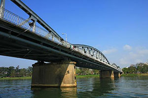

Hue Festival
Hue Festival is an international cultural event organized in Hue every two years to honor the priceless heritages of Hue. The first Hue Festival was called Vietnamese-French Festival and celebrated in 1992. In 2000, the festival gained its official name “Hue Festival.”

Hue Festival
One of the biggest festivals in Vietnam, Hue Festival reconstructs the whole city with many community-based events which are organized both inside and outside of the city to rejuvenate the traditional values of Hue. Those events include The Night of the Palace, Nam Giao Worshiping Ceremony, Truyen Lo Ceremony, Ao Dai Festival, Sea Festival, Kite Competition, Human Chess, etc. The city also re-organizes many traditional festivals and recovers many traditional craft villages.
Normally, there are more than 20 Vietnamese arts companies and 20 international arts companies that participate in the festival. Thousands of artists from many places all over the world come to Hue and perform about 200 shows in as many as 40 venues thorough the city. Competitions, fairs, science conferences and exhibitions are hold consecutively during the festival time, attracting millions of visitors. In 2006, there were 1.5 million domestic visitors and 150 million international visitors.

Hue Festival
There are a variety of arts performances during Hue Festival, reflecting the diversity of the nations taking part in this wonderful event. Carried out by the artists from France, China, England, Italia, the US, Korea, Brazil… the performances embrace the typical cultural values of the 5 continents. There are also performances of artists from the sister cities of Thua Thien – Hue such as Quebec, Quanzhou, Hawaii, Nord Pas de Calais, Poitou Charentes, etc.
Hue Best Attractions
Truong Tien Bridge
Truong Tien Bridge has connected two riverbanks of Huong River for over 100 years. It is known as the symbol of Hue. .
Hue Royal Palace

The Hue Imperial City was one of the most important political centres..